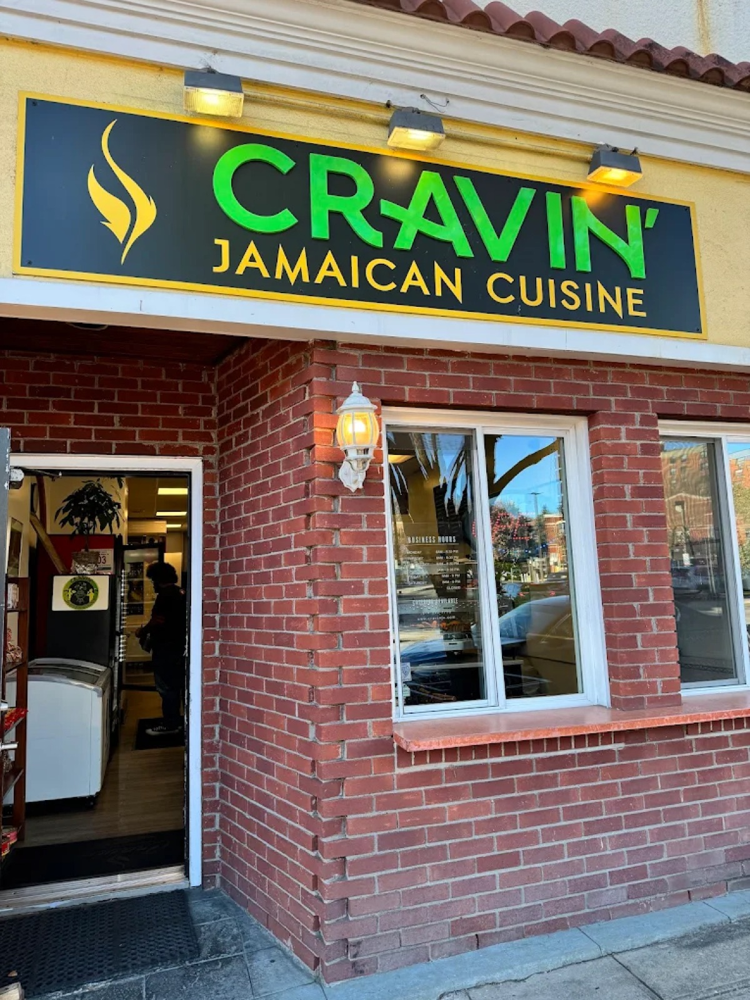
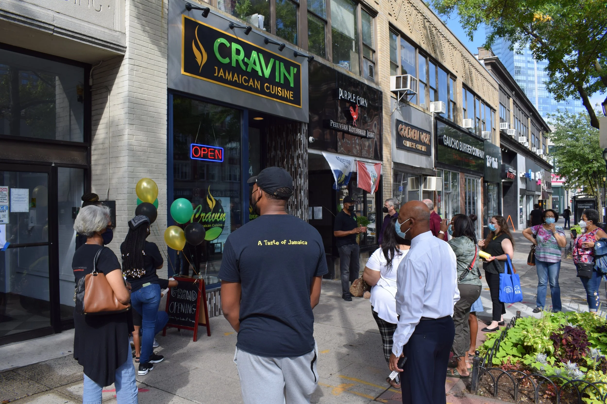
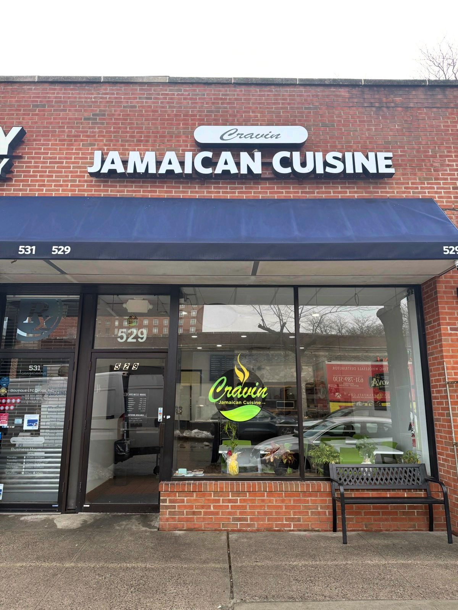

Our Locations
Three restaurants across Westchester County, New York.
Three restaurants across Westchester County, New York.
Our original location — where it all began in 2015.
| Day | Hours |
|---|---|
| Monday | 8:00 AM – 8:00 PM |
| Tuesday | 8:00 AM – 8:00 PM |
| Wednesday | 8:00 AM – 8:00 PM |
| Thursday | 8:00 AM – 8:00 PM |
| Friday | 8:00 AM – 9:00 PM |
| Saturday | 8:00 AM – 9:00 PM |
| Sunday | Closed |

Right on Mamaroneck Ave in the heart of downtown.
| Day | Hours |
|---|---|
| Monday | 8:00 AM – 9:00 PM |
| Tuesday | 8:00 AM – 9:00 PM |
| Wednesday | 8:00 AM – 9:00 PM |
| Thursday | 8:00 AM – 10:00 PM |
| Friday | 8:00 AM – 10:00 PM |
| Saturday | 8:00 AM – 10:00 PM |
| Sunday | Closed |

Our newest location — bringing island flavors to Gramatan Ave.
| Day | Hours |
|---|---|
| Monday | 8:00 AM – 9:00 PM |
| Tuesday | 8:00 AM – 9:00 PM |
| Wednesday | 8:00 AM – 9:00 PM |
| Thursday | 8:00 AM – 10:00 PM |
| Friday | 8:00 AM – 10:00 PM |
| Saturday | 8:00 AM – 10:00 PM |
| Sunday | Closed |
